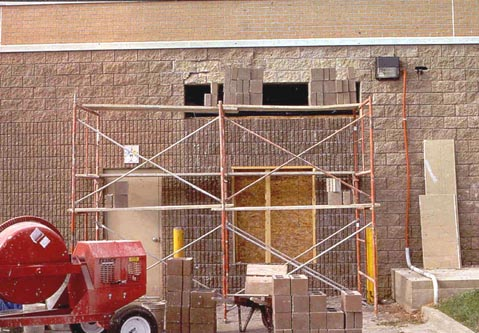
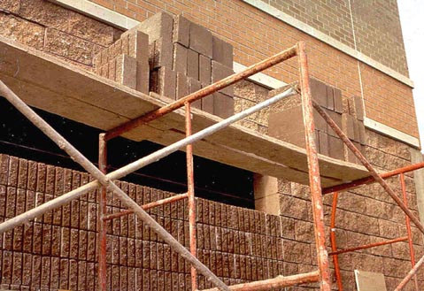

Platform

Except when used only as a walkway, the platform is the work area of the scaffold. Therefore, an inspection of a scaffold platform requires safety checks of both the platform structure and how the platform is used by the workers.
NOTE: Except where indicated, these requirements also apply to manually propelled, pump jack, ladder jack, tube and coupler, and pole scaffolds, as well as the specialty scaffolds described in the Supported Scaffolds module.

Figure 13. Example of a scaffold that is not fully planked. Also planks are not cleated or otherwise secured against displacement. There is also more than a 14-inch gap between the building and the scaffold platform, no guardrails, and no toeboards. A smorgasbord of violations...you pick 'em!
- Each platform must be fully planked or decked between the front uprights and the guardrail supports (see Figure 13 and Figures 14 & 15).
- Platforms used solely as walkways, or during erection or dismantling, require only the planking that the employer establishes is necessary to provide safe working conditions.
- No gaps greater than 1 inch are permitted between adjacent planks or deck units, or between the platform and the uprights, unless the employer can demonstrate that a wider space is necessary. In such cases, the gap will be as small as possible and not exceed 9½ inches.
- Wooden planking must not be covered with opaque finishes, except that platform edges may be marked for identification. Platforms may be coated periodically with wood preservatives, fire retardants, and slip-resistant finishes, provided they do not obscure the top or bottom wood surfaces.
- Scaffold platforms and walkways must be at least 18 inches wide, unless they are used in areas that the employer can demonstrate are so narrow that they must be less than 18 inches wide. In such cases, the platforms must be as wide as feasible, and fall protection must be provided.
- Nothing that could cause a slip, trip or fall (i.e. tools, scrap material, chemicals, snow, ice, etc.) is allowed to accumulate on the platform.
- When moving platforms to the next level, the existing platform must be left undisturbed until the new end frames have been set in place and braced.
Tip: For the same reason, cleats or other means of connecting planks should be on the underside.

- To prevent slippage, platforms must be cleated or otherwise restrained at each end, or else overlap their support at least 6 inches ().
- Unless it is designed and installed to support employees and materials without tipping, or has guardrails that block employee access, each end of a platform may not extend over its support more than 12 inches (for platforms 10 feet or shorter in length) or more than 18 inches (for platforms more than 10 feet long).
- On scaffolds where platforms are overlapped to create a long platform, the overlap may only occur over supports, and may not be less than 12 inches, unless the platforms are restrained (i.e., nailed together) to prevent movement.
- On scaffolds where platforms are abutted to create a long platform, each abutted end must rest on a separate support surface (this does not preclude the use of shared support members such as "T" sections, hook-on platforms that rest on common supports, etc.).
- When platforms must overlap because a scaffold changes direction, such as turning a corner, platforms that rest on a bearer at an angle other than a right angle shall be laid first, and platforms that rest at right angles over the same bearer shall be laid second, on top of the first platform.
Improper Access Leads to Serious Injuries
Case Report:
- The victim was climbing the end-frame of a three-tiered metal scaffold when a midrail pulled loose. He fell approximately 12 feet to a concrete dock. He suffered multiple fractures to the head, left and right foot, and left wrist, and torn ligaments in the knees.
When brackets are used to support cantilevered platforms, they must:
- Be seated with side-brackets parallel to the frames, and end-brackets at 90 degrees to the frames.
- Be used only to support personnel, unless the scaffold has been designed for other loads by a qualified engineer and built to withstand the tipping forces caused by other loads.
- Scaffold platforms must be able to support their own weight, plus four times the maximum intended load.
-
Do not load the scaffold or any component parts beyond their maximum capacity (their own weight and 4:1 the maximum intended load). A scaffold can be overloaded by :
- Too many people being on the platform.
- Too much material being stored on the platform.
- Point loading, or concentrating too much of the load in one area. (Figures 14 & 15)
- 
- 
Figures 14 & 15. Planking on this platform should be six planks wide, instead of only two. Also, note that the planks are bowing because the bricks are loaded at one point on the platform instead of being evenly distributed.
There are two kinds of falling object hazards associated with scaffolds. One concerns the employees on the scaffold itself, and the other concerns employees who may work in or enter the area below the scaffold.
-
Each employee on a scaffold must be protected from falling hand tools, debris, and other small objects, by :
- Hardhats
- Toeboards, screens, or guardrail systems
- Debris nets or canopy structures that contain or deflect falling objects.
- Placement of potential falling objects away from the edge of the surface from which they may fall when the falling objects are too large, heavy or massive to be contained or deflected by any of the above-listed measures.
-
Where there is a danger of tools, materials, or equipment falling from a scaffold onto employees below, they must be protected by :
- The area below the scaffold being barricaded so employees are not permitted to enter.
- Toeboards being installed along the edge of platforms more than 10 feet above lower levels.
- Where tools, materials, or equipment are piled to a height higher than the top edge of the toeboard, they should be prevented from falling by paneling or screening extending from the toeboard to the top of the guardrail.
- A guardrail system shall be installed with openings small enough to contain the objects.
- Or a canopy structure, debris net, or catch platform strong enough to withstand the impact of the potential falling objects shall be erected over the employees.
-
When toeboards are used for falling object protection, they must be :
- Able to withstand a force of at least 50 pounds applied in any downward or horizontal direction, at any point along the toeboard.
- At least 3½ inches high from the top edge to the level of the walking/working surface.
- Securely fastened in place at the outermost edge of the platform, and not have more than ¼-inch clearance above the walking/working surface.
- Solid, or with openings not over 1 inch.